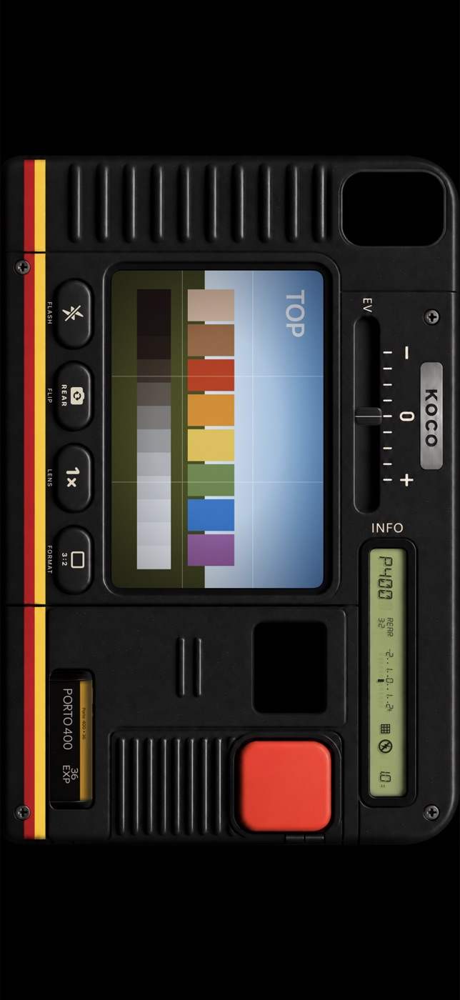
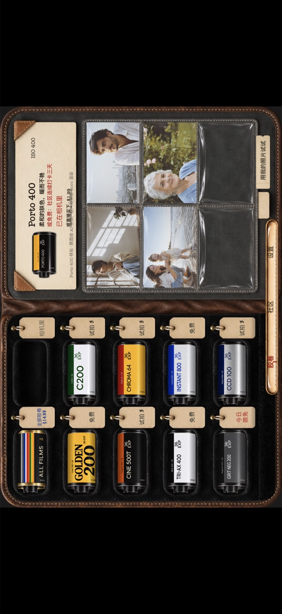
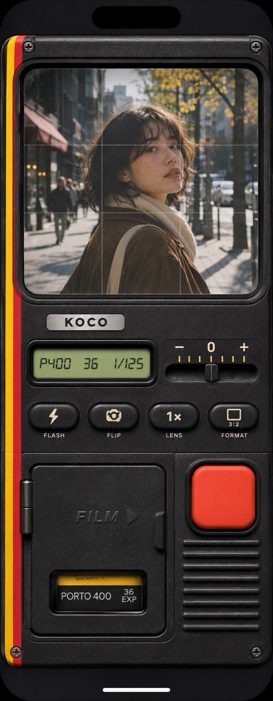
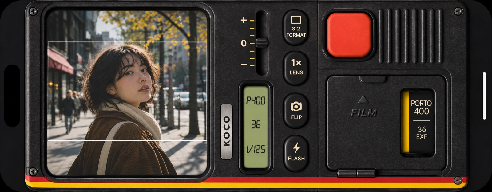
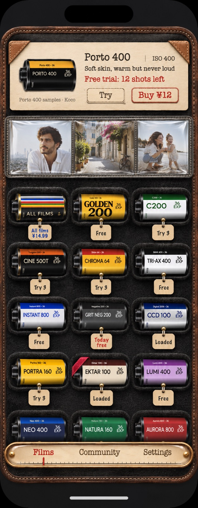
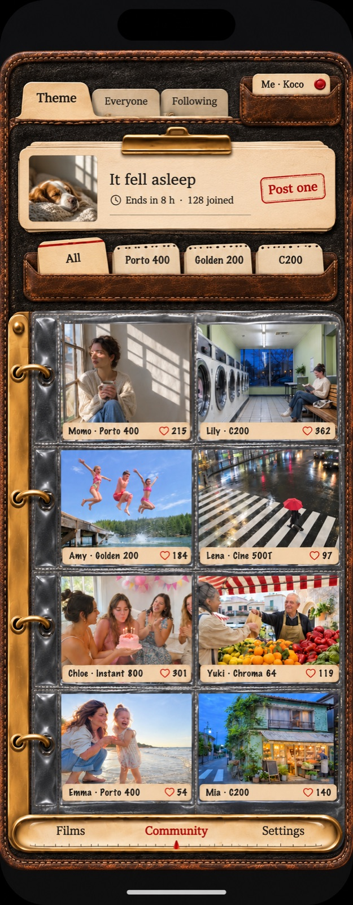

<title>普通 iPhone 竖屏方案</title>
<meta name="claude:viewport-fit-sides" content="cover">
<style>
:root{--bg:#f4efe6;--fg:#231d17;--muted:#6d645a;--card:#fbf8f2;--line:#ddd3c3;--accent:#a8361d}
@media (prefers-color-scheme:dark){:root:not([data-theme="light"]){--bg:#16130f;--fg:#ece5d8;--muted:#9c9385;--card:#201c17;--line:#36302a;--accent:#e57a55;color-scheme:dark}}
:root[data-theme="dark"]{--bg:#16130f;--fg:#ece5d8;--muted:#9c9385;--card:#201c17;--line:#36302a;--accent:#e57a55;color-scheme:dark}
body{background:var(--bg);color:var(--fg);font:16px/1.7 -apple-system,"PingFang SC",system-ui,sans-serif;padding-left:max(16px,env(safe-area-inset-left,0px));padding-right:max(16px,env(safe-area-inset-right,0px));padding-block:24px 64px}
main{max-width:920px;margin:0 auto}
h1{font-size:24px;margin:0 0 6px;text-wrap:balance}
h2{font-size:19px;margin:34px 0 8px;padding-top:6px;border-top:1px solid var(--line);text-wrap:balance}
h3{font-size:16px;margin:16px 0 6px}
.sub,.small{color:var(--muted)}.small{font-size:14px}
.lead{background:var(--card);border:1px solid var(--line);border-left:4px solid var(--accent);border-radius:10px;padding:12px 16px;margin:14px 0}
figure{margin:10px 0;background:var(--card);border:1px solid var(--line);border-radius:10px;padding:8px}
figure img{width:100%;height:auto;display:block;border-radius:6px}
figcaption{font-size:14px;color:var(--muted);padding:6px 4px 2px}
.pair{display:grid;grid-template-columns:1fr 1fr;gap:10px}
@media (max-width:700px){.pair{grid-template-columns:1fr}}
ul,ol{padding-left:20px;margin:6px 0}li{margin:4px 0}
.tw{overflow-x:auto}table{border-collapse:collapse;font-size:14px;width:100%;min-width:560px}
th,td{border-bottom:1px solid var(--line);padding:7px 8px;text-align:left;vertical-align:top}th{color:var(--muted);font-weight:600;font-size:13px}
.you{color:var(--accent);font-weight:600}
</style>
<style>.trio{display:grid;grid-template-columns:repeat(3,1fr);gap:10px}@media (max-width:700px){.trio{grid-template-columns:1fr 1fr}}.q{background:var(--card);border:1px solid var(--line);border-radius:10px;padding:10px 14px;margin:10px 0}</style>
<main>
<h1>普通 iPhone 竖屏方案</h1>
<p class="sub">11 月 26 日 · 只是方案，没改代码。我先在 iPhone 17 Pro 模拟器上看现状，和 GPT 讨论后定方向，四张概念图由 GPT 画（不是最终美术）。Duo 不变。</p>

<div class="lead"><b>核心判断：</b>普通 iPhone 不能把 Duo 的横机身、两页相机包转 90° 再缩小——字是侧着的、要转手机、三成屏幕是黑边。改成<b>竖着做的姐妹物件</b>：相机是一台竖向机身；相机包一次只打开一页；材质、零件、长铜窗都沿用 Duo 那一套。横着拿手机拍照时，机身不动，只有字和图标转正（像系统相机）。</div>

<h2>现在的问题（17 Pro 竖拿）</h2>
<div class="pair">
<figure><figcaption>相机：横机身整个侧过来，FLASH、EV、液晶、胶卷窗的字都是侧的；必须横过手机才能用；上下三成黑边。</figcaption></figure>
<figure><figcaption>胶卷包（社区、设置同理）：两页包侧过来再缩小，纸签和卡片字只有 6–8 号；样片很小；一半是黑边。弹出层要手动挪位（F17 就是这么来的）。</figcaption></figure>
</div>

<h2>概念图 1 · 相机（竖拿）</h2>
<figure><figcaption>GPT 概念图。灵感是半格相机（本来就是竖着拍）。</figcaption></figure>
<ul>
<li><b>上：大取景窗</b>，接近整宽，接近方形——竖拍、横拍都能放下画面。</li>
<li><b>中：</b>KOCO 铭牌、液晶条 + EV 滑杆一排；四个小按钮（闪光、前后、焦段、画幅）在快门上面一排，离开底部手势区。</li>
<li><b>下：</b>左边胶卷仓门（带“FILM ▸”和卷标小窗，点或拉开进包），右边橙红大快门正在右手拇指下。左边沿竖着走黄红条。</li>
</ul>

<h2>概念图 2 · 相机（横拿拍照）</h2>
<figure><figcaption>GPT 概念图。机身位置不动，字和图标各自原地转正。（图里 KOCO 铭牌还是侧的、取景里是竖照片加横框——实际做时铭牌字也转，取景画面整幅转正。）</figcaption></figure>
<ul>
<li><b>不整屏旋转：</b>界面锁竖排，用已有的重力传感器（HoldSensor）判断手机怎么拿；转过约 30° 才切换、平放保持上一次，免得来回跳。</li>
<li><b>会转的：</b>四个按钮的图标和小字、液晶读数（竖条里改成三行短字）、EV 的 − 0 +、胶卷窗卷标、仓门“FILM”、铭牌字、计数、提示条、弹层。<b>所以这些字一律不画进 GPT 图</b>：机身图留空白位，字由代码放；图标、卷标作为单独小图，原地转 90°。</li>
<li><b>取景：</b>画面整幅转正，取景窗里显示横向 3:2 的实际裁切框；存下来就是横片（已有逻辑）。</li>
<li>相机控制键（16/17 右侧那颗）横拿时在上面，当快门用；屏幕快门照常。</li>
</ul>

<h2>概念图 3 · 胶卷页（竖拿）</h2>
<figure><figcaption>GPT 概念图。图里有几卷名字像真品牌（Portra、Ektar、Natura）、两个“已装”，只是概念图的错，实际用我们自己的卷。</figcaption></figure>
<ul>
<li><b>上：一张横向奶油卡</b>——卷名、一句性格、试拍/价格状态、试拍/购买/装入。高度按内容定。</li>
<li><b>卡下：整宽样片条</b>，左右滑，点开看大图。矮屏先收起这一条。</li>
<li><b>下：三列胶卷</b>压在皮带下、挂纸签，上下滚；点一卷只换上面的卡（不翻页），买、试、装都在这里一步到。</li>
<li><b>底：长铜窗</b>（胶卷 / 社区 / 设置），所有页一样。</li>
</ul>

<h2>概念图 4 · 社区相册（竖拿）</h2>
<figure><figcaption>GPT 概念图，零件全部来自 Duo 社区 v7。</figcaption></figure>
<ul>
<li><b>上：征集夹</b>——纸耳“题目 / 大家 / 关注”，右边小皮袋“我的”；题目下夹着征集卡（题目、剩余时间、投一张）；一排胶卷小纸签。</li>
<li><b>下：两列相册</b>，只有照片和署名条，左边铜环随行。</li>
<li><b>往下看时</b>征集卡像插回夹层一样收起，只留当前范围的小纸签；点纸签或回顶部就展开。胶卷纸签只在相关范围出现。</li>
</ul>

<h2>其他页的方向</h2>
<p>按“使用顺序”重排，不机械地“Duo 左页放上、右页放下”：看片 = 照片在上、批注纸在下；作者页 = 档案夹在上、相册在下；信纸 = 整页，键盘把它推上去，“寄出”始终可见；设置的转鼓本来就适合竖排。相机包和社区横拿时不转（只相机支持横拿）。</p>

<h2>和 GPT 的讨论</h2>
<div class="tw"><table>
<tr><th>话题</th><th>结论</th></tr>
<tr><td>竖向姐妹机身</td><td>一致：要独立竖机身，不放大横机身让人转手机。</td></tr>
<tr><td>取景窗</td><td>采纳 GPT：不写死 3:4；横拍时画面和裁切框一起变，只转边框会构图误判。</td></tr>
<tr><td>按钮位置</td><td>采纳 GPT：四个小按钮放快门上面，离开底部手势区；仓门要有“FILM”字样，不靠猜。</td></tr>
<tr><td>胶卷页</td><td>采纳 GPT：样片不和卡并排，改到卡下整宽；卡高按内容定。翻页方案两边都不选（打断“比较→购买”）。</td></tr>
<tr><td>社区</td><td>采纳 GPT：不是整块折叠，收起后留范围纸签；不用底部面板（遮照片、和铜窗抢位）。</td></tr>
<tr><td>Duo 外屏竖拿</td><td>GPT 提醒要另验；我的意见：这次不动 Duo，Duo 外屏仍是横机身。</td></tr>
<tr><td>字号</td><td>一致：关键字至少 14–16 号，触区至少 44pt；不同机型的高度差由中间滚动区吸收，相机在 SE 上取景窗可以缩短。</td></tr>
</table></div>
<p class="small">GPT 原文：project/discuss/portrait-plan.md</p>

<h2>要 GPT 新画的部件</h2>
<ul>
<li>竖机身底板（17 Pro 1206×2622 精确尺寸，圆角、灵动岛、底部横条位置画在模板上），<b>不带任何字</b>；另出 SE 用的短取景版。</li>
<li>机身小件：快门（按下/抬起）、仓门（关/开动画）、四个按钮图标、EV 推钮、空白铭牌、空白液晶。</li>
<li>竖向单页包框：皮边 + 毛毡衬（中间可上下延长）、奶油卡的横版底纸、整宽样片袋条、三列皮带一行（可重复）。</li>
<li>竖向相册：两列照片袋一行（带铜环，可重复）、征集夹（展开/收起两态）、收起后的范围纸签。</li>
<li>沿用：卷罐、纸签、铜窗、纸耳、署名条、我的皮袋（按竖屏尺寸重出）。</li>
</ul>

<h2>怎么推进</h2>
<ol>
<li>相机：竖机身 + 横拿转字（最影响拍照）。</li>
<li>胶卷页：卡 + 样片条 + 三列卷 + 铜窗。</li>
<li>社区：等 Duo 社区 v7 主页的零件定稿后再做竖版，零件共用。</li>
<li>看片、作者页、信纸、投稿夹、设置逐页跟上；最后在 SE、17 Pro、Pro Max 和 17 Pro 真机逐页验（中英、大字号、键盘）。</li>
</ol>
<p class="small">每一步先出 GPT 部件给你看，再接代码；Duo 的界面不受影响。</p>

<h2>要你定的（也在决定页上）</h2>
<div class="q"><b>1. 普通 iPhone 的相机用竖向机身？</b><br>A 竖向姐妹机身（<span class="you">推荐</span>）· B 横机身放大，拍照时转手机</div>
<div class="q"><b>2. 相机包、社区横拿时？</b><br>A 只竖排，横拿不转（<span class="you">推荐</span>）· B 横拿换回 Duo 那样的两页</div>
<div class="q"><b>3. 胶卷页的排法？</b><br>A 卡在上、卷在下，点卷换卡（<span class="you">推荐</span>）· B 卷一页，点卷翻到详情页</div>
<div class="q"><b>4. 什么时候做？</b><br>A 进 v1，先相机、再胶卷，社区跟 v7 一起（<span class="you">推荐</span>）· B 进 v1，等社区 v7 定稿后一起做 · C 上线后再做</div>
</main>
